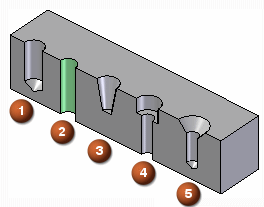

Hole types
Use the Type option on the Hole Options dialog box to define the type of hole you want. You can construct several types of holes:

You can only define one type of hole for a single hole feature. To construct a different type of hole, you must construct another hole feature.
The options available on the Hole Options dialog box change, depending on the type of hole you specify. For example, when you set the Threaded option, new options display so you can specify the thread type you want.
Learn more
Hole extentsV bottom angles
Threaded holes
Saving commonly used hole parameters
Holes database
Look up more details
Hole Options dialog box (Simple)Hole Options dialog box (Threaded)
Hole Options dialog box (Counterbore)
Hole Options dialog box (Countersink)
Hole Options dialog box (Tapered)
Related Topics
Hole database converterTolerance dialog box